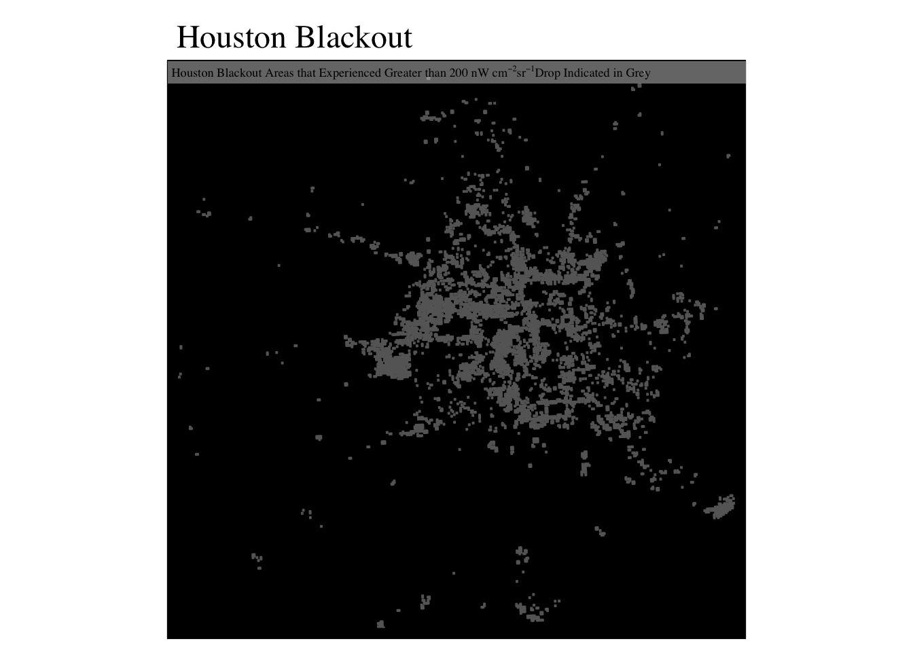
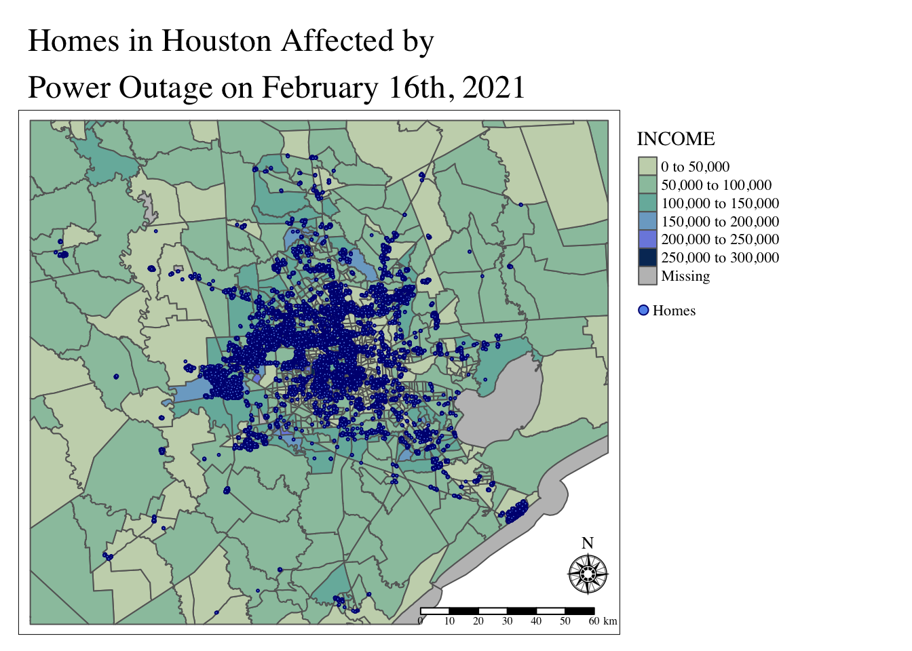
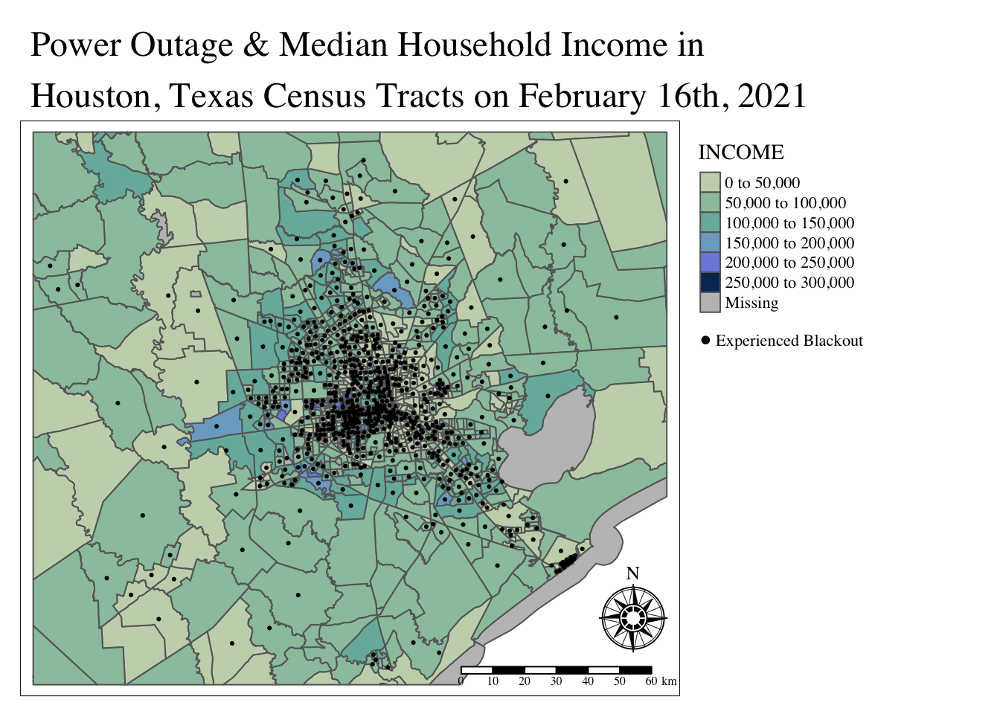
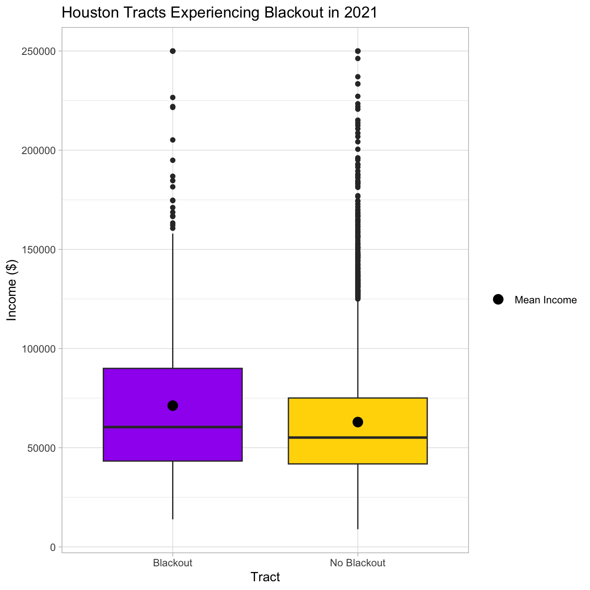

Code
library(tidyverse)
library(sf)
library(tmap)
library(spDataLarge)
library(geodata)
library(terra)
library(stars)library(tidyverse)
library(sf)
library(tmap)
library(spDataLarge)
library(geodata)
library(terra)
library(stars)# Read in nightlight grid data
day7_tile5 <- stars::read_stars(here::here("data/VNP46A1/VNP46A1.A2021038.h08v05.001.2021039064328.tif"))
day7_tile6 <- stars::read_stars(here::here("data/VNP46A1/VNP46A1.A2021038.h08v06.001.2021039064329.tif"))
day16_tile5 <- stars::read_stars(here::here("data/VNP46A1/VNP46A1.A2021047.h08v05.001.2021048091106.tif"))
day16_tile6 <- stars::read_stars(here::here("data/VNP46A1/VNP46A1.A2021047.h08v06.001.2021048091105.tif"))
# Read in socioeconomic data and list of layers in folder
texas_list <- st_layers(here::here("data", "ACS_2019_5YR_TRACT_48_TEXAS.gdb"))
texas <- st_read(here::here("data", "ACS_2019_5YR_TRACT_48_TEXAS.gdb"), layer = 'ACS_2019_5YR_TRACT_48_TEXAS')
income <- st_read(here::here("data", "ACS_2019_5YR_TRACT_48_TEXAS.gdb"), layer = 'X19_INCOME')
metadata <- st_read(here::here("data", "ACS_2019_5YR_TRACT_48_TEXAS.gdb"), layer = 'TRACT_METADATA_2019')
# Read in Road data
roads <- st_read(here::here("data", "gis_osm_roads_free_1.gpkg"),
query = "SELECT * FROM gis_osm_roads_free_1 WHERE fclass='motorway'")
# Read in building data
buildings <- st_read(here::here("data", "gis_osm_buildings_a_free_1.gpkg"),
query = "SELECT *
FROM gis_osm_buildings_a_free_1
WHERE (type IS NULL AND name IS NULL)
OR type in ('residential', 'apartments', 'house', 'static_caravan', 'detached')")# Make sure CRS match
st_crs(day7_tile5) == st_crs(day7_tile6)[1] TRUEst_crs(day16_tile5) == st_crs(day16_tile6)[1] TRUE# Merge day rasters
day7_intensity <- st_mosaic(day7_tile5, day7_tile6)
day16_intensity <- st_mosaic(day16_tile5, day16_tile6)
# Find the change in night lights intensity (presumably) caused by the storm
# We expect that day 16 intensity will be less than day 7, or before the storm
intensity_diff <- day7_intensity - day16_intensity
intensity_diff[intensity_diff < 200] <- NA
# Vectorize the raster
intensity_mask_poly <- intensity_diff |>
st_as_sf() |>
st_make_valid() # Blackout mask polygon
houston_box <- st_bbox(c(xmin = -96.5,
ymin = 29,
xmax = -94.5,
ymax = 30.5)) |>
st_as_sfc() |>
st_as_sf() |>
st_set_crs(st_crs(intensity_mask_poly)) |>
st_transform(crs = 3083)
intensity_mask_poly <- st_transform(intensity_mask_poly, crs = 3083)
# Crop the mask to zoom into around Houston
blackout_mask <- st_intersection(intensity_mask_poly, houston_box)
# Reproject to ESPG 2083
blackout_mask_3083 <- st_transform(blackout_mask, crs = 'EPSG:3083')# Check CRS
if(st_crs(houston_box) == st_crs(day7_intensity)) {
print("Coordinate reference systems match")
} else{
warning("Updating coordinate reference systems to match")
# transform data to match
houston_box <- st_transform(houston_box, st_crs(day7_intensity))
}tm_shape(blackout_mask_3083) +
tm_polygons(col = 'white') +
tm_layout(main.title = 'Houston Blackout',
bg.color = 'black',
fontfamily = 'Times') +
tm_credits(expression('Houston Blackout Areas that Experienced Greater than 200 nW cm'^-2*'sr'^-1*'Drop Indicated in Grey'),
size = 0.7,
width = 1,
position = c('LEFT', 'TOP'),
bg.color = 'lightgrey',
bg.alpha = .5)
houston_before <- st_crop(day7_intensity, houston_box)
tm_shape(houston_before) +
tm_raster(style = 'cont',
breaks = c(0, 2000, 4000, 6000, 8000),
palette = viridisLite::viridis(3),
title = expression('Light Intensity nW cm'^-2*'sr'^-1)) +
tm_layout(main.title = 'Houston Night Lights Before Storm on 2021-02-07',
main.title.size = 1.2,
legend.outside = FALSE,
fontfamily = 'Times',
legend.bg.color = 'grey',
legend.bg.alpha = .4) +
tm_compass() +
tm_scale_bar()
# Post Light
houston_after <- st_crop(day16_intensity, houston_box)
tm_shape(houston_after) +
tm_raster(style = 'cont',
breaks = c(0, 2000, 4000, 6000, 8000),
stretch.palette = TRUE,
palette = viridisLite::viridis(5),
title = expression('Light Intensity nW cm'^-2*'sr'^-1)) +
tm_layout(main.title = 'Houston Night Lights After Storm on 2021-02-016',
main.title.size = 1.2,
legend.outside = FALSE,
fontfamily = 'Times',
legend.bg.color = 'grey',
legend.bg.alpha = .3) +
tm_compass() +
tm_scale_bar()
# Transform the roads CRS
roads_3083 <- st_transform(roads, crs = "EPSG:3083")
# Create highway buffer within 200 meters
highways <- st_buffer(roads_3083, dist = 200) |>
st_union() |>
st_as_sf()
if(st_crs(highways) == st_crs(blackout_mask_3083)){
print('TRUE, CRS of both sf objects match')
}else{
stop("FALSE, check that CRS of both sf objects match")
}[1] "TRUE, CRS of both sf objects match"# tmap_options(check.and.fix = TRUE)
# tm_shape(highways) +
# tm_polygons()
if(st_crs(blackout_mask) == st_crs(highways)) {
print("Coordinate reference systems match")
} else{
warning("Updating coordinate reference systems to match")
# transform data to match
highways <- st_transform(highways, st_crs(blackout_mask))
}[1] "Coordinate reference systems match"# Mask the highways out of the blackout data
blackout_highways <- st_difference(blackout_mask_3083, highways)
# Exploratory plots
#plot(blackout_highways)
#plot(highways)
#plot(blackout_mask)# Transform CRS
buildings_3083 <- st_transform(buildings, crs = "EPSG:3083")
# Make sure that CRS matches, stop if otherwise; both should be EPSG: 3083
if(st_crs(buildings_3083) == st_crs(blackout_highways)) {
print("CRS matches")
} else{
stop("Update coordinate reference systems to match")
}[1] "CRS matches"# Subset from the buildings df where it intersects with blackout highways and keep specific columns, do not drop geometry
blackout_homes <- buildings_3083[blackout_highways, op = st_intersects] %>%
st_make_valid()
# Check for unique values
if(nrow(unique(blackout_homes)) == nrow(blackout_homes)){
print("TRUE, all values in new sf object are unique")
}else{
warning('Not all values in new sf object are unique')
}[1] "TRUE, all values in new sf object are unique"# Count and report number of homes/ rows
blackout_homes_logical <- nrow(blackout_homes)
n <- sum(blackout_homes_logical)
# Using original buildings_3083 df, use new sum value of homes that were in the blackout area to find more information
print(paste0("The number of homes within the blackout area is ", n, ", which is ", round(100 * n / nrow(buildings_3083)), "% of all buildings in the area"))[1] "The number of homes within the blackout area is 157970, which is 33% of all buildings in the area"# Select income and geoid for the income data to be joined later
income <- income |>
select('B19013e1', 'GEOID') |>
rename(INCOME = 'B19013e1') |>
rename(GEOID_Data = 'GEOID')
# Select the texas geometries and join it with socioeconomic data
census_income_join <- texas |>
dplyr::select("Shape_Length", "Shape_Area", "GEOID_Data", "Shape") |>
full_join(income, by = 'GEOID_Data') |>
st_transform(crs = 'EPSG:3083') # transform CRS
# Check CRS
if(st_crs(census_income_join) == st_crs(blackout_homes)){
print("CRS matches!")
}else{
stop('Recheck CRS')
}[1] "CRS matches!"# Re transform to match
houston_box <- st_transform(houston_box, crs = 'EPSG:3083')
# We want to zoom in on just Houston, on homes affected by the blackout
blackout_census_tracts <- st_crop(census_income_join, houston_box)
if(st_crs(blackout_census_tracts) == st_crs(blackout_homes)){
print("CRS matches!")
}else{
warning('Updating CRS to match')
blackout_census_tracts <- st_transform(texas, crs = 'EPSG:3083')
}[1] "CRS matches!"# Join the census and income df with the blackout homes, and filter for buildings to rule out missing data
tracts_blackouts <- st_join(census_income_join, blackout_homes, join = st_contains, largest = TRUE) |>
filter(fclass == 'building')
# filter to only tracts that had buildings that experienced blackouts
blackout_centroids <- st_centroid(tracts_blackouts)# Color blind friendly palette for plotting polygons
color_pal <- c("#C8D5B9", "#8FC0A9", "#68B0AB", "#9BA2FF", "#043565")
# Plot the homes
tm_shape(blackout_census_tracts) +
tm_polygons(col = 'INCOME',
palette = color_pal) +
tm_shape(blackout_homes) +
tm_bubbles(col = "cornflowerblue",
border.col = 'navyblue',
size = .01) +
tm_layout(legend.outside = TRUE,
main.title = 'Homes in Houston Affected by \nPower Outage on February 16th, 2021',
fontfamily = 'Times') +
tm_compass(position = c('RIGHT', 'BOTTOM'),
type = 'rose',
size = 2) +
tm_scale_bar(position = c('RIGHT', 'BOTTOM')) +
tm_add_legend(type = 'symbol', # Add legend for the homes with the same bubblse
labels = "Homes",
col = 'cornflowerblue',
border.col = 'navyblue',
shape = 21,
size = .5)
# Set base map for census tracts
tm_shape(blackout_census_tracts) +
tm_polygons(col = 'INCOME',
palette = color_pal) +
# Plot the centroids
tm_shape(blackout_centroids) +
tm_dots(col = 'black') +
tm_layout(legend.outside = TRUE,
main.title = 'Power Outage & Median Household Income in \nHouston, Texas Census Tracts on February 16th, 2021',
fontfamily = 'Times') +
tm_compass(position = c('RIGHT', 'BOTTOM'),
type = 'rose',
size = 3) +
tm_scale_bar(position = c('RIGHT', 'BOTTOM')) +
tm_add_legend(type = 'symbol',
labels = "Experienced Blackout",
col = 'black',
shape = 20,
size = .5)
# Select all the buildings income that experienced a blackout
income_blackout <- tracts_blackouts |>
select(INCOME) |>
st_drop_geometry() # Drop geometry
# Rejoin the census and blackout homes df and filter to the unrecorded homes, assuming fclass = NA means there was not a blackout
income_noblackout <- st_join(census_income_join, blackout_homes, join = st_contains, largest = TRUE) |>
filter(is.na(fclass)) |> # Joined df above only has buildings and NA's, we selected buildings before to see the homes that did have blackout so now we select NA's
select(INCOME) |> # Select income
st_drop_geometry()
# Bind both dfs for plotting
income_df <- rbind(cbind(income_blackout, group = 'Blackout'), cbind(income_noblackout, group = "No Blackout"))
# Boxplot distribution of income
ggplot(income_df, aes(x = group,
y = INCOME,
fill = group)) +
geom_boxplot(aes(x = group,
y = INCOME,
fill = group)) +
labs(x = "Tract", # Relabel x Axis to Tract
y = "Income ($)", # Relabel axes title so we are looking at Income
title = "Houston Tracts Experiencing Blackout in 2021") + # Define explicit title
theme_light() + # light theme
scale_fill_manual(values = c('purple', # Purple representing blackout tracts
'gold')) + # Grey color NA
guides(fill = 'none') + # Remove legend above for box plots, intuitive so no need
stat_summary(
fun = mean, # We want the function to evaluate the mean out of each grade, defined by x
aes(shape = "Mean Income"), # Assign the label that will show up in manual legend
geom = 'point', # We want the mean to be visualized as a standout point
col = "black", # Black dot to represent mean income
size = 5.5) + # Adjust size of the point
scale_shape_manual(values=c("Mean Income" = 20), # Mean income assigned to point value which is 20
guide = guide_legend(' '))
After wrangling and aggregating the Houston data from the blackout in February 2021, there was not a significant difference in the distribution between income and the houses that did or did not experience the blackout. The median and mean household income of the census tracts that experienced the blackout were greater than that of the census tracts that did not experience a blackout. However, the homes that did not experience a blackout had a significantly higher count than the houses that did experience a blackout.The limitations of this study are that while the boxplot shows the median household income, there could also be an omitted variable that factors into the preparedness for an extreme weather event in Houston.